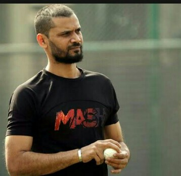

Home Contact About Blog video Log in

Mashrafe Bin Mortaza (Bengali: মাশরাফি বিন মর্তুজা pronunciation (help·info); born 5 October 1983)
is a Bangladeshi international cricketer and politician who is the former captain in all three formats of the game for the Bangladesh national cricket team. Widely considered as the best captain for Bangladesh in ODI and T20 formats of all time, he played his last match as a ODI captain at sylhet international cricket stadium in 6th march 2020. he became only the fifth bowler in history to take 100 ODI wickets as a captain.[7][8] Mortaza's career has been hampered by fifteen injuries as he has undergone a total of ten operations on his knees and ankles. Mashrafe is also the first pace bowler in Bangladesh who bowled a delivery clocking over 148 km/h, which he did during a Test against New Zealand at Hamilton in 2001.[9][10]